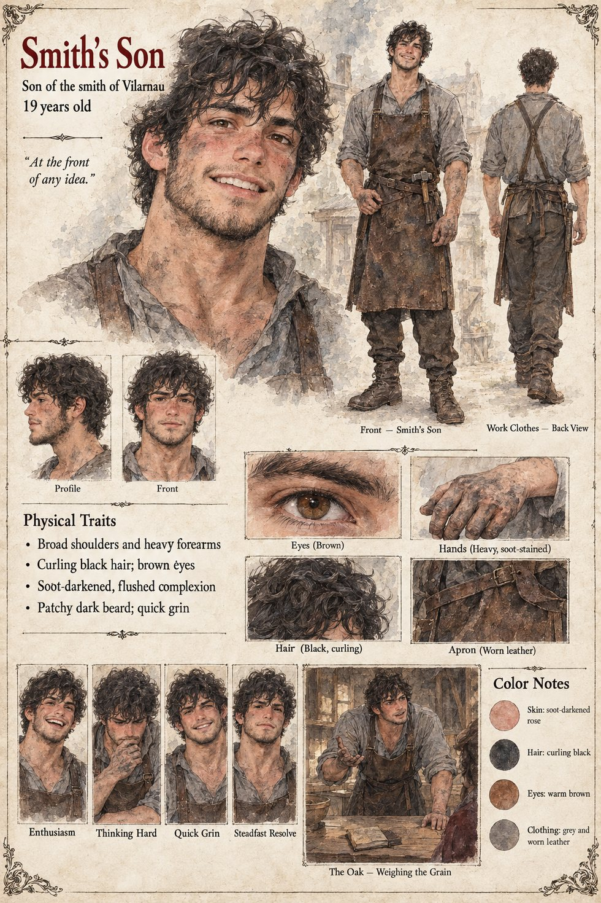

The Smith's Son
Son of the smith of Vilarnau · later husband of Gersenda · 19 years old at the weighing
Nineteen, the son of the village smith, who has read one book in his life and likes to be at the front of any idea. To him the stranger is Saint Two-Swords, though the saint is still in the stage of having no feast-day and no church. In Brunissen's tavern on a sleety evening in Jorren, when a man at the back says that the door leads to the baron's cellar, he goes red and says that the cellar is the one place in the country he wishes it did lead to. When the weigher's widow asks how a sack of dusty barley is to be set on a door to heaven, he is the one who proposes that the village weigh at the old oak instead, on a plank, with the beam hung from a branch, and tell the bailiff that the green's stone is being kept clear in honor of the visitor. A fat man points out that the Charter says the stone. The smith's son answers that the Charter was written by men who had never seen a door open.
The hands go up one by one, with two left in laps, and it is settled. Nobody in the room names what is being given up; the Observer's notes spell it out afterward. His father the smith does not live to reach the ridge, and the son carries the dead man's hammer up the quarry road on his back and finds, in thirty years, no use for it. On the ridge he marries Gersenda, who bears him five children. The manuscript never names him. The sheet's curling black hair, soot-darkened skin and patchy beard are its own, and so is the compression of the manuscript's remark into its caption, “at the front of any idea.”